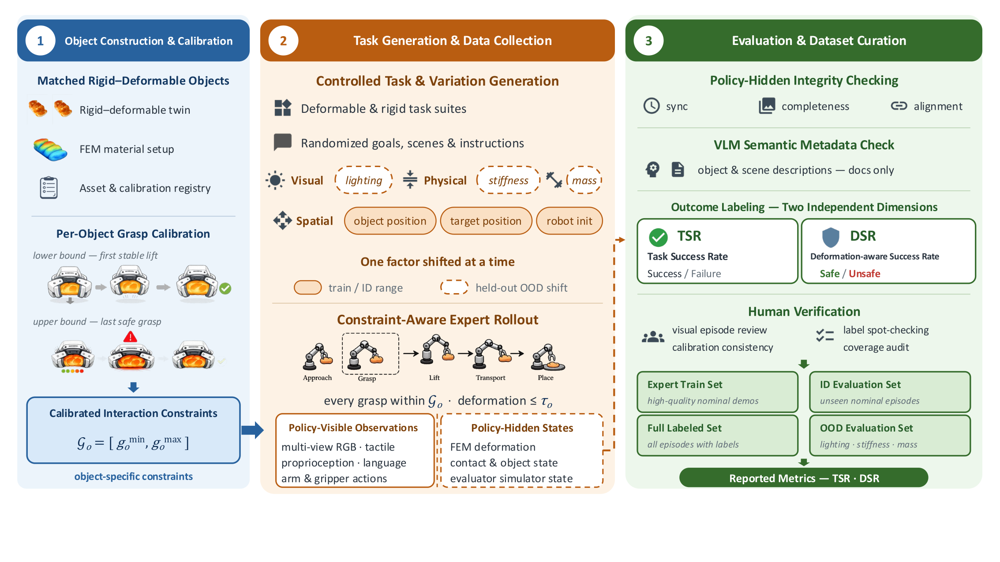
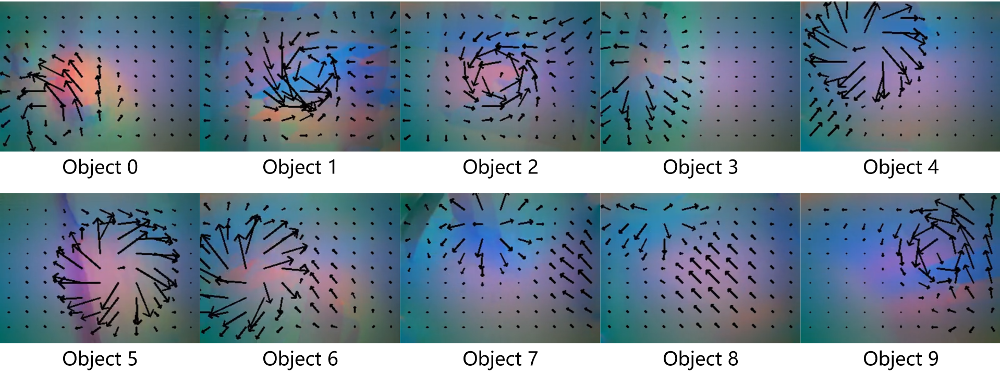
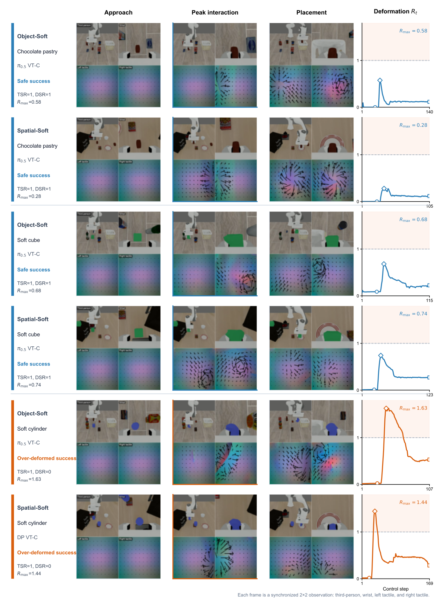
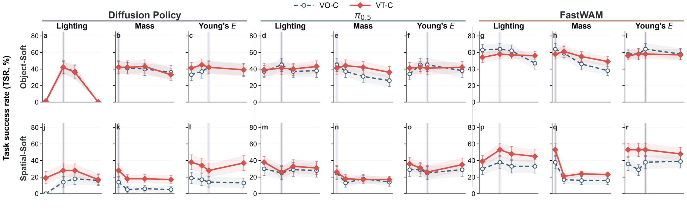

Abstract
A policy can complete a manipulation task while letting the object slip — or by crushing it. Task success sees neither. SoftVTBench is a visuo-tactile dataset and benchmark that separates the two. It contains 4,000 expert demonstrations over 40 tasks and 50+ assets, each episode synchronizing multi-view RGB, dual-finger tactile RGB and marker motion, proprioception, language, and actions at 20 Hz — alongside evaluator-only finite-element (FEM) states the policy never sees. On top of it we define the Deformation-aware Success Rate (DSR), which credits a rollout only when the task is completed and deformation stays within a per-object tolerance calibrated before any policy is trained. Across Diffusion Policy, π0.5, and FastWAM, every one of the 12 in-distribution configurations contains successes that violate that tolerance. Under distribution shift, visuo-tactile variants win all six task-success comparisons and five of six on DSR — while in distribution the same comparison is split. Making touch available is not the same as using it.
The Metric
Task success is a component of DSR, not an alternative to it.
The task predicate is purely kinematic: the instructed object comes to rest in the target region. The deformation side is read from FEM states the policy never sees, and compared against a tolerance calibrated per object before any policy is trained — so no method can move the bar it is scored against. Reporting Task Success Rate (TSR) alongside DSR makes their difference an exact count of the rollouts that reached the target by mishandling the object.
What the policy sees
Third-person and wrist RGB, dual-finger tactile RGB and marker motion, proprioception, and the language instruction. It outputs an end-effector pose target plus a gripper command — binary or continuous.
What the evaluator sees
FEM nodal positions, object poses, contact and drop events. Deformation is the peak rigid-motion-removed RMS node displacement, normalized by object size — which separates being carried from being squeezed.
Calibrated up front
A scripted grasp–lift–hold sweep fixes each object's gripper envelope and its deformation tolerance before training. The full trace is released, so the criterion can be audited or rescored without new rollouts.

Where SoftVTBench Sits
Complete tasks, volumetric deformable objects, policy-visible touch, physical ground truth, deformation-aware evaluation — existing suites have some, none have all five.
| Benchmark | Complete Task | 3D Deformable | Policy-Visible Touch | Physical Ground Truth | Deformation-Aware Eval |
|---|---|---|---|---|---|
| LIBERO | ✓ | ✗ | ✗ | ✗ | ✗ |
| ManiSkill2 | ✓ | ✓ | ✗ | ✓ | ✗ |
| SoftGym | ✓ | ◎ | ✗ | ✓ | ✗ |
| MoDeSuite | ✓ | ◎ | ✗ | ✓ | ✗ |
| DefGraspSim | ✗ | ✓ | ✗ | ✓ | ✓ |
| SoGraB | ✗ | ✓ | ✗ | ✓ | ✓ |
| VTDexManip | ✓ | ✗ | ✓ | ✗ | ✗ |
| ManiFeel | ✓ | ✗ | ✓ | ✗ | ✗ |
| Tabero | ✓ | ✗ | ✓ | ✗ | ◎ |
| SoftVTBench | ✓ | ✓ | ✓ | ✓ | ✓ |
✓ full support · ◎ partial · ✗ not supported.
Dataset
Every episode records two views of the same interaction: what the policy may use, and what only the evaluator may read.
| Suite | Object Type | Variation Axis | #Tasks | #Demos | ID Eval Episodes | OOD Conditions |
|---|---|---|---|---|---|---|
| Object-Soft | Deformable | Object identity | 10 | 1,000 | 500 | 9 |
| Spatial-Soft | Deformable | Spatial layout | 10 | 1,000 | 500 | 9 |
| Object-Rigid | Rigid twin | Object identity | 10 | 1,000 | 500 | — |
| Spatial-Rigid | Rigid twin | Spatial layout | 10 | 1,000 | 500 | — |
| Total | — | — | 40 | 4,000 | 2,000 | — |
OOD covers nine held-out conditions on the two deformable suites — three levels each of lighting (67.5 / 180 / 270), mass (×1.25 / ×1.75 / ×2.5), and Young's modulus (×0.5 / ×0.8 / ×2.0). One factor moves at a time; the task, initial state, and seed are reused from its ID reference.

Task Suites
A matched 2×2 over object type (deformable vs. rigid twin) and variation axis (object identity vs. spatial layout) — one shared pick-and-place skill throughout.
Deformable Main Suites
The object must reach its target without slipping out of the grasp or being compressed past its calibrated tolerance.
Object-Soft
Fixed layout, ten different objects — six bakery-style meshes and four procedural primitives. The grasp must adapt to each object's geometry and compliance.
DeformableSpatial-Soft
Two identical instances per scene; only the instruction says which one. Success checks the identity of the object that actually moved.
DeformableMatched Rigid Twin Suites
Same mesh, texture, and mass — stiffness raised until deformation is negligible. Same layouts and instructions, so difficulty on a soft suite cannot simply be blamed on deformability.
Object-Rigid
Object-Soft replicated with rigid twins. Isolates object-identity adaptation from deformability.
Rigid ControlSpatial-Rigid
Spatial-Soft replicated with rigid twins. Isolates language-grounded target selection from deformability.
Rigid ControlResults
Diffusion Policy, π0.5, and FastWAM under paired vision-only (VO) and visuo-tactile (VT) inputs, on identical episodes and seeds.
Hidden by task success
12 / 12ID configurations containing successful rollouts that exceed the deformation tolerance — 0.7–24% of each one's own successes.
Touch under shift
6 / 6 · 5 / 6OOD comparisons won by the visuo-tactile variant on TSR, and on DSR. In distribution, the same comparison is split.
Not an inherent tradeoff
≤ 0.4 ptFastWAM's TSR–DSR gap on both spatial configurations — two episodes out of 500 — while leading the table.
In-Distribution — TSR vs. DSR
| Model | Input | Object-Soft | Spatial-Soft | ||
|---|---|---|---|---|---|
| TSR | DSR | TSR | DSR | ||
| Diffusion Policy | VO-C | 37.4 | 33.6 | 15.6 | 13.4 |
| VT-C | 40.0 | 30.4 | 33.0 | 25.0 | |
| π0.5 | VO-C | 41.6 | 38.4 | 26.0 | 22.6 |
| VT-C | 41.4 | 35.0 | 27.6 | 22.0 | |
| FastWAM | VO-C | 62.0 | 58.0 | 37.0 | 36.6 |
| VT-C | 57.6 | 54.4 | 56.4 | 56.0 | |
DSR is below TSR in all twelve configurations. For Diffusion Policy VT-C the gap is 9.6 points on Object-Soft — 24% of its own successes, an exact count of 48 episodes. It also flips rankings: TSR puts VT-C above VO-C (40.0 vs. 37.4), DSR reverses it (30.4 vs. 33.6). And the gap is family-dependent: 10–24% for Diffusion Policy, 8–20% for π0.5, but only 0.7–6.5% for FastWAM.

Deformable vs. Matched Rigid Twin (TSR)
| Model | Input | Object variation | Spatial variation | ||
|---|---|---|---|---|---|
| Rigid | Soft | Rigid | Soft | ||
| Diffusion Policy | VO-C | 40.0 | 37.4 | 14.0 | 15.6 |
| VT-C | 35.0 | 40.0 | 11.0 | 33.0 | |
| π0.5 | VO-C | 60.0 | 41.6 | 50.4 | 26.0 |
| VT-C | 59.6 | 41.4 | 54.0 | 27.6 | |
| FastWAM | VO-C | 64.0 | 62.0 | 25.0 | 37.0 |
| VT-C | 61.6 | 57.6 | 30.0 | 56.4 | |
Deformability does not cost the same for everyone — and can pay. π0.5 drops 18.4 and 24.4 points going rigid → soft, while FastWAM gains 12.0 on spatial variation. Diffusion Policy is not language-conditioned, so its spatial numbers are a floor set by that limitation, not a measure of spatial generalization.
Sensing or Control Granularity? (π0.5 ablation)
Both gripper encodings are stored for every demonstration, so the two factors can be crossed without recollecting data. B = binary, C = continuous.
| Configuration | Object-Soft | Spatial-Soft | ||
|---|---|---|---|---|
| TSR | DSR | TSR | DSR | |
| VO-B | 30.2 | 27.2 | 34.2 | 20.0 |
| VO-C | 41.6 | 38.4 | 26.0 | 22.6 |
| VT-B | 41.0 | 28.0 | 30.0 | 21.4 |
| VT-C | 41.4 | 35.0 | 27.6 | 22.0 |
A "tactile gain" can be a gripper gain. From VO-B, continuous control alone adds 11.4 TSR points and touch alone adds 10.8 — together they add nothing further. Meanwhile VO-C and VT-B are 0.6 points apart in TSR but 10.4 apart in DSR. Match the action space before crediting touch.
Out-of-Distribution (Δ vs. ID)
| Model | Input | Object-Soft | Spatial-Soft | ||
|---|---|---|---|---|---|
| TSR | DSR | TSR | DSR | ||
| Diffusion Policy | VO-C | 29.2 (−8.2) | 26.6 (−7.0) | 11.0 (−4.6) | 8.8 (−4.6) |
| VT-C | 31.2 (−8.8) | 25.0 (−5.4) | 25.2 (−7.8) | 17.8 (−7.2) | |
| π0.5 | VO-C | 35.8 (−5.8) | 33.2 (−5.2) | 24.4 (−1.6) | 19.4 (−3.2) |
| VT-C | 41.0 (−0.4) | 34.2 (−0.8) | 28.4 (+0.8) | 23.2 (+1.2) | |
| FastWAM | VO-C | 54.4 (−7.6) | 53.8 (−4.2) | 27.8 (−9.2) | 27.2 (−9.4) |
| VT-C | 55.8 (−1.8) | 55.8 (+1.4) | 39.4 (−17.0) | 38.8 (−17.2) | |

Touch pays off under shift, not everywhere. VT-C wins all six TSR comparisons (sign test p = 0.016) and five of six on DSR. The pattern follows the suite more than the factor: on Spatial-Soft the tactile curve sits at or above vision-only everywhere, while on Object-Soft the two overlap except under mass shifts — touch only observes what happens after contact. Lighting acts before contact and degrades the pathway both modalities share, which is why Diffusion Policy collapses at both illumination extremes regardless of input.
Caveat. The released Diffusion Policy and FastWAM VT variants train at smaller effective batch sizes, so their VO–VT comparisons describe those variants rather than isolate the modality; the π0.5 ablation is batch-matched. Everything here is simulation, and the gap to physical tactile sensors is not characterized in this work.
Citation
@article{jing2026softvtbench,
title = {SoftVTBench: A Deformation-Aware Visuo-Tactile Dataset and
Benchmark for Deformable-Object Manipulation},
author = {Jing, Bowen and Wang, Mingxin and Hao, Ruiyang and Ge, Chenchen and
Shen, Hanwen and He, Junjie and Cui, Yang and Hou, Yiming and
Zhou, Weitao and Wang, Jiawei and Li, Minglei and Zhang, Dandan and
Zhao, Ding and Liu, Houde and Li, Xiaofan and Liu, Si and
Luo, Ping and Yu, Haibao},
year = {2026},
eprint = {2607.04234},
archivePrefix = {arXiv},
primaryClass = {cs.RO},
url = {https://arxiv.org/abs/2607.04234}
}